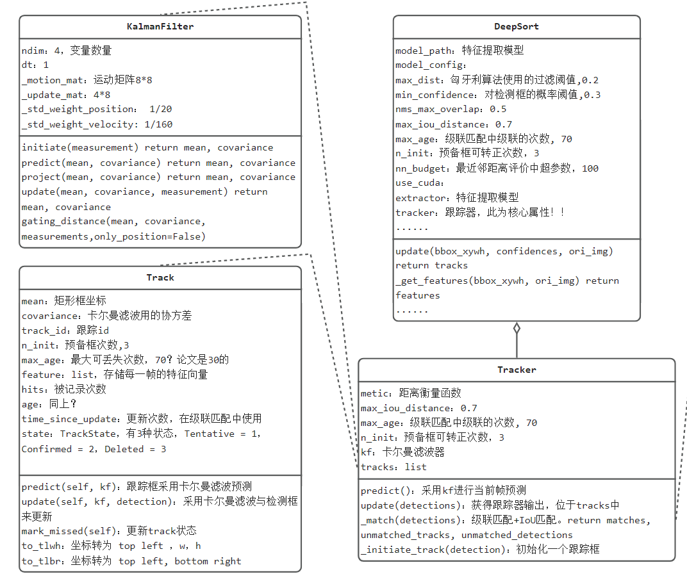
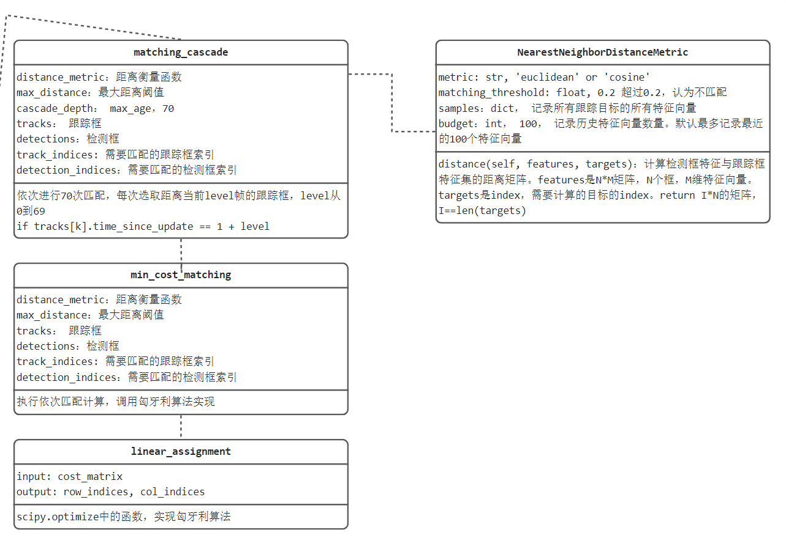
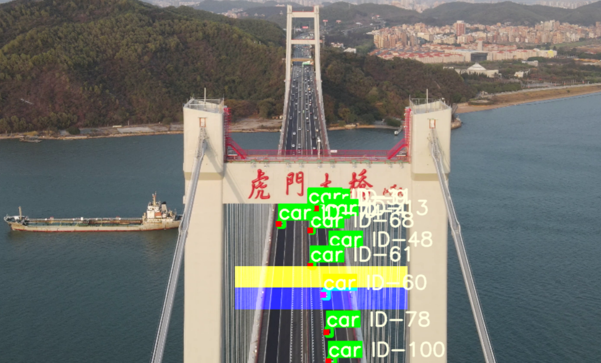
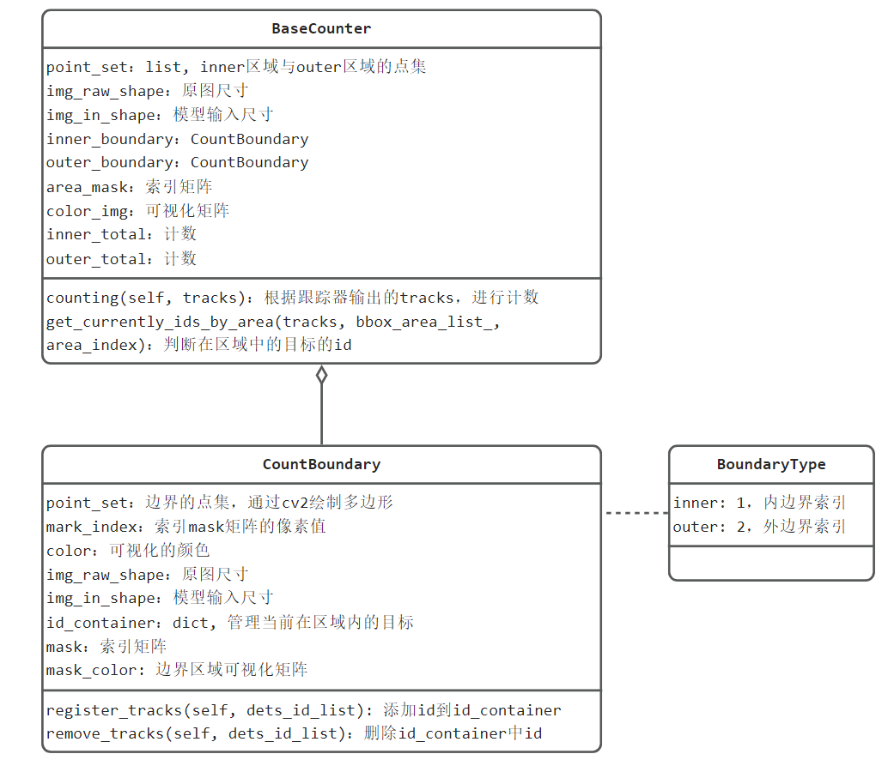
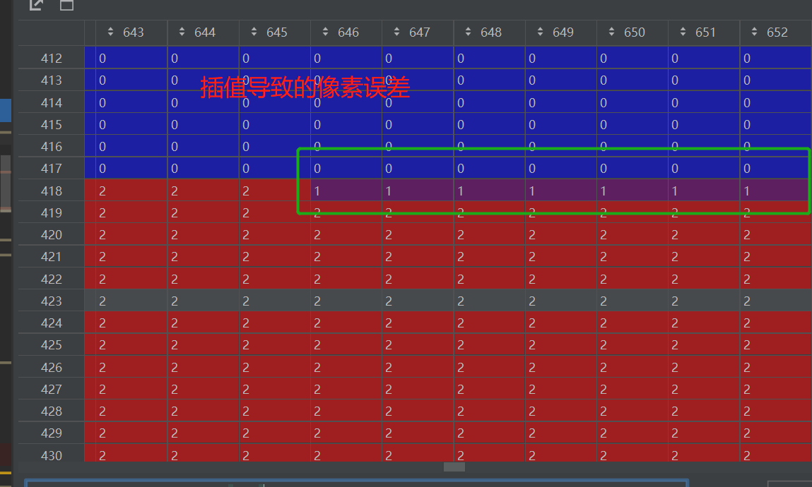

8.4 目标跟踪（下）——虎门大桥车流量统计
上一小节，对deepsort的实现步骤进行了详细分析，本小节将使用deepsort代码以及yolov5来实现车流量统计。
本节，首先对deepsort源代码的设计进行简要的结构剖析，来学习代码设计，然后将其结合yolov5，实现车流量统计。
注意，代码所需的模型文件，通过网盘下载：链接：https://pan.baidu.com/s/1Ys_v1Tqta4wJMHC8NKeTTg 提取码：ucf4
注意，ckpt.t7为deepsort的模型文件，一定要放到：F:\pytorch-tutorial-2nd\code\chapter-8\tracking\deep_sort\deep_sort\deep\checkpoint下面
deepsort源码——结构分析
deepsort的代码不算复杂，设计了几个核心类，然后为各个核心功能编写了实现函数。这里绘制简要的UML图，对代码设计的思路进行学习。

对于一个业务场景，首先识别实体，并分析实体的属性和功能，下面自下而上进行分析目标跟踪当中存在的实体。
Track目标物体：目标跟踪的核心元素是目标物体，这里称为Track类，对于一个目标，需要有坐标信息，id， 特征向量列表，状态等信息。
Tracker目标跟踪器：管理所有目标，并可实现目标的更新，因此需要卡尔曼滤波器，管理目标集合tracks等信息。
KalmanFilter卡尔曼滤波器：维护卡尔曼增益矩阵，并实现预测、更新两大功能。
DeepSort类：进行统一封装，对外提供update函数，返回跟踪框。

对于级联匹配，会在Tracker类中_match()实现，其中设计了一系列模块，包括
matching_cascade：级联匹配实现，循环70次进行匹配。
min_cost_matching：实现一次最小代价匹配。
linear_assignment：匈牙利算法实现。
NearestNeighborDistanceMetric：级联匹配中距离度量功能实现，其中维护了各目标的所有特征向量，每一帧的特征向量都会被保存。最大保存100个特征向量。
if self.budget is not None:
self.samples[target] = self.samples[target][-self.budget:] # 相当巧妙的实现最多记录最新的100个特征向量
到这里，deepsort大体框架以及搭建完毕，使用方法非常简单，只需要实例化DeepSort类，调用.update()即可获得跟踪框信息。
deepsort+yolov5——车流量统计
目标跟踪可以获得目标的位置及唯一标识，它只是方法，并不是目的。
基于目标跟踪方法，可以实现许多有价值的事情，例如卡口人流量计数，交通道路车流量计数与统计，警戒区域预警等。
进行行人计数或车流量计数时，需要判断目标是否经过特定区域，这时需要撞线机制来实现，撞线机制可以有两种方法实现。
一种是基于区域判断，另外一种是基于线段相交判断。
另外一种是基于线段相交判断，则是基于物体的历史轨迹曲线，判断是否与界线相交。
计数中的撞线机制
本案例采用基于区域的撞线机制，对边界设置两个区域，一般称inner和outter区域，当物体先到达inner，再进入outter，则可判断物体是离开，反之亦然。
对于inner和outter区域，每个区域需要记录曾经到达区域里的目标id，仅当两个区域同时存在过目标id，可以计数，并且删除目标id。
例如图中的ID-60，进入了inner区域（蓝色），inner区域需要观察ID-60是否存在outer区域中（黄色），当前是不存在的，因此添加到inner区域的历史列表中。
下一帧，ID-60到达黄色区域，黄色区域同样地，先判断ID-60是否来自蓝色区域，它在蓝色区域的历史记录中找到了ID-60，因此可以判断ID-60是从inner到达outer，所以outer进行加一。
反之inter加一。

在代码实现上有一些抽象，这里做简单的讲解。
如何判断物体到达inner和outter区域？
采用mask矩阵，inner区域像素是1， outer像素是2，mask矩阵大小与图片大小一致，采用目标的位置坐标对mask矩阵索引，通过索引值==1？ 还是==2？来判断当前物体位于什么区域。
如何判断物体先、后顺序？
区域中发现新物体时，首先判断是否存在对向区域，若不存在，才可以加入区域的物体容器中进行管理。若存在，即可删除，并且计数。
为了实现撞线机制，这里设计了三个类，分别是BoundaryType、CountBoundary和BaseCounter

处理逻辑在BaseCounter的counting()，边界区域抽象成CountBoundary，实现了必要的函数来完成计数。
下面简单介绍counting函数中，如何判断物体是从outer来，到达inter，实现inter计数+1的（反之亦然）
第1行：通过物体的x,y坐标，对索引矩阵进行索引，得到索引值。例如：[1, 2, 0, 0, 0, ...]。通过索引值可知在何区域
第4行：通过索引值列表，判断当前在inner区域的目标，并且返回它们的id
第5行：获取，当前到过outer的目标id
第8行：判断是否有交集，有交集表明，该id从outer来，已经抵达inner。可以计数。
第9行：判断是否存在差集，inner有，outer没有，表明物体可以加入inner的id_container中进行管理
第10行：由于目标完成了计数，outer_boundary中需要删除它。
第11行：由于目标第一次到来，所以注册到inner_boundary中，后续供outer_boundary查询。
bbox_area_list = self.area_mask[index_xy] # 获取bbox在图像中区域的索引，1,2分别表示在边界区域. [int,]
# ======================== 先处理inner区域 ====================================
inner_tracks_currently_ids = self.get_currently_ids_by_area(tracks, bbox_area_list, BoundaryType.inner)
outer_tracks_history_ids = list(self.outer_boundary.id_container.keys()) # 获取历史帧经过outer区域的目标的id
# 当前与历史的交集，认为是目标从outer已经到达inner，可以计数，并且删除。
outer_2_inner_tracks_id = self.intersection(inner_tracks_currently_ids, outer_tracks_history_ids)
only_at_inner_tracks_id = self.difference(inner_tracks_currently_ids, outer_tracks_history_ids)
self.outer_boundary.remove_tracks(outer_2_inner_tracks_id) # 删除outer中已计数的id
self.inner_boundary.register_tracks(only_at_inner_tracks_id) # 注册仅inner有的id
注意事项：
在第1行中 self.area_mask的制作中，由于采用的是像素1和2，在resize时，导致2的边界有一系列1的存在，导致了误检！
按设计，1在2的下面，这里1反而出现在了2的上面，导致实际是“出”的，计算为了“入”

把上述代码组装起来得到01-main.py，做好模型文件、视频文件、边界点的配置，运行即可得到以下结果。
模型权重文件，视频文件可通过网盘下载：
注意，ckpt.t7为deepsort的模型文件，一定要放到：F:\pytorch-tutorial-2nd\code\chapter-8\tracking\deep_sort\deep_sort\deep\checkpoint下面
完整视频可见B站
这里为了实现边界区域点集的获取，编写了鼠标点选边界区域的代码00-draw-border.py。
运行后，鼠标双击实现选点，选点顺序必须从左上角开始，顺时针，选择完毕，terminal中打印的点集list，复制下来使用即可。
小结
目标跟踪案例中，内容比较多，这里总结一些关键知识点：
- SORT与DeepSORT算法步骤：本案介绍目标跟踪中出现的问题，一步步引出DeepSORT设计的复杂逻辑，由问题出发，以解决问题的方式，观察DeepSORT的步骤。
- DeepSORT中的核心算法：卡尔曼滤波器与匈牙利算法，卡尔曼滤波常用于带有高斯噪声的线性运动系统，可以很好的预测运动状态。匈牙利算法可以解决二分图匹配问题，今后也可以借鉴两个算法解决实际业务问题。
- DeepSORT代码结构剖析：通过UML图，分析DeepSORT代码是如何抽象、设计的，巩固面向对象编程的思想。
- 计数的撞线机制：介绍基于区域的撞线机制，并通过面向对象编程来实现计数器。
- DeepSORT+YOLOv5的联合使用：将目标检测+目标跟踪+计数机制联合使用，构建实际应用，在主代码中可以发现，各功能模块抽象独立出去，主代码的核心代码仅两行：bboxes = detector.detect(im)； counter.counting(list_bboxs)；
目标跟踪仍是一个较大研究方向，DeepSORT仅是其中一种方法，要深入掌握目标跟踪还需学习其他方法。